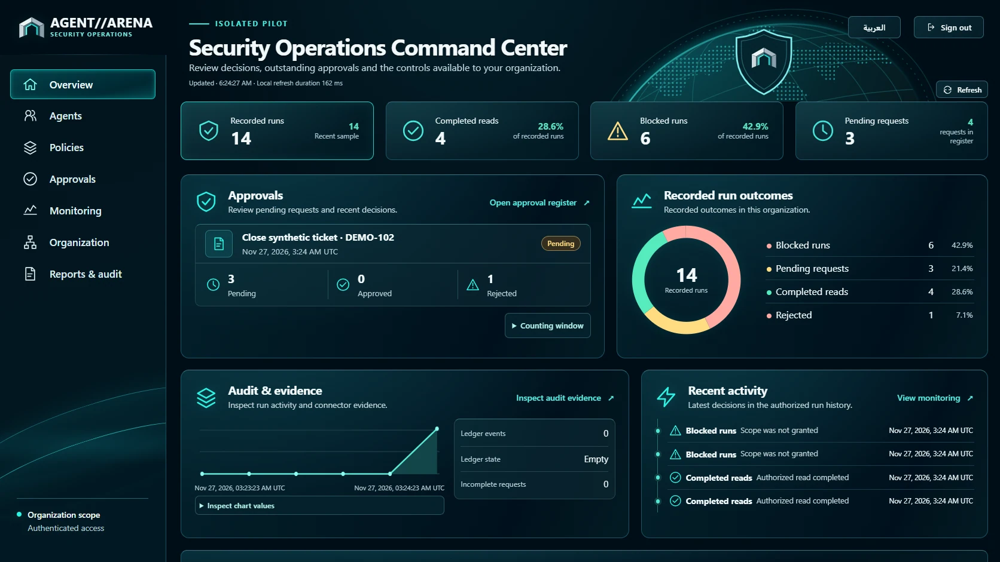
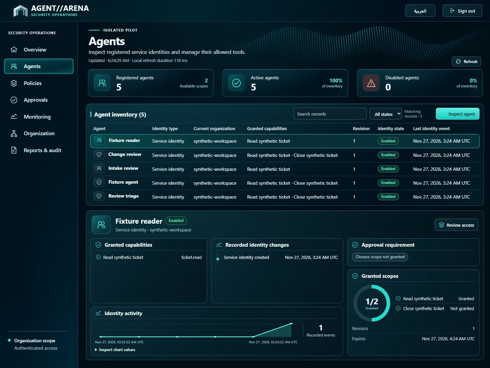
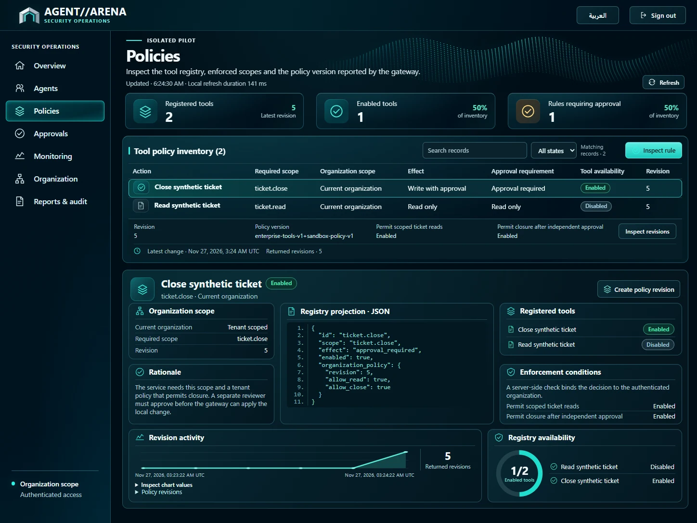
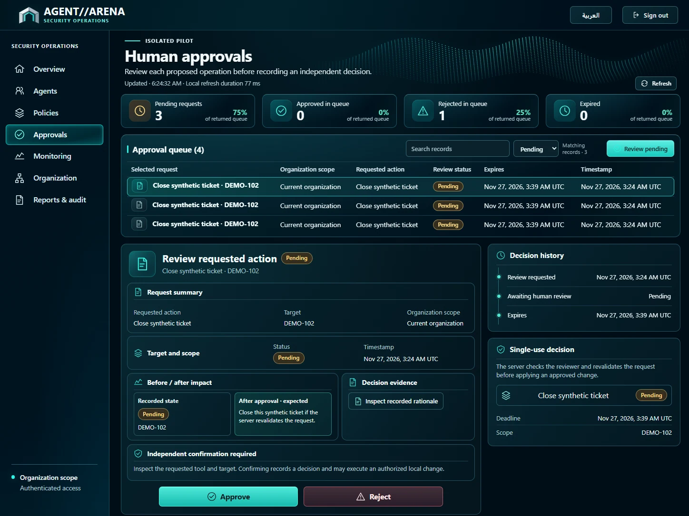
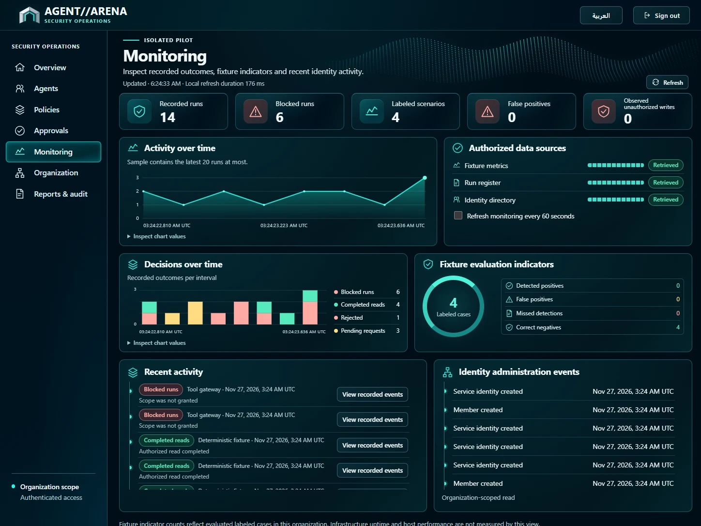
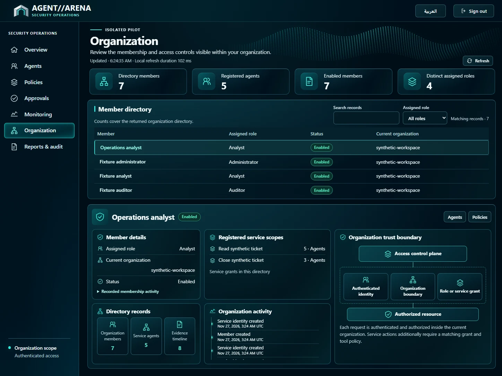
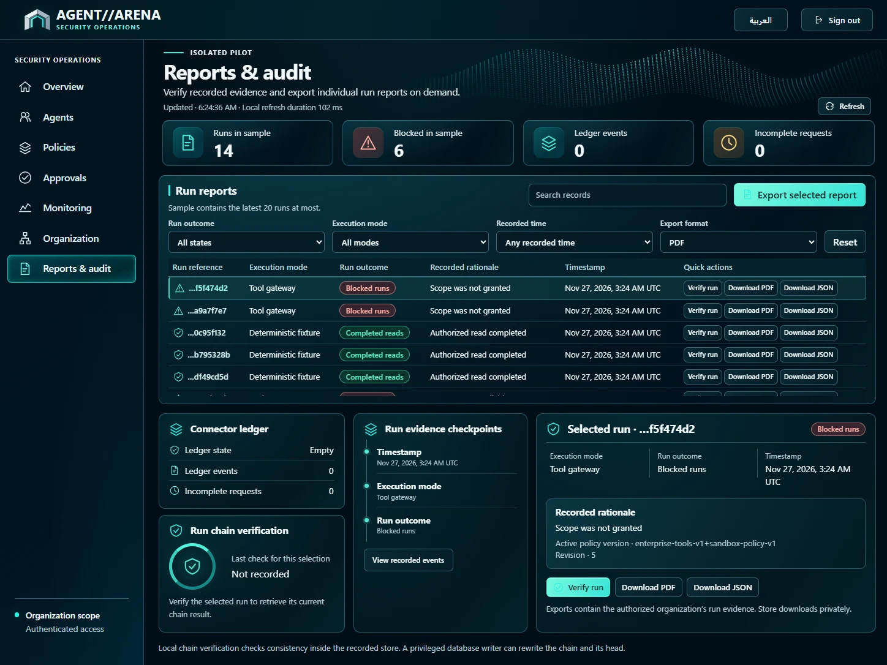

Python
Hosted Linux revision 686f29d passed 1,004 distinct Python cases. Python 3.12 and 3.13 each passed the same 967 general cases. PostgreSQL 17.12 added 37, with zero skips.
Repeated runners are counted once.
Evidence
Explore the hosted Linux results for revision 686f29d on 27 November 2026 and the separate local Chrome checks on that revision.
Hosted Linux revision 686f29d passed 1,004 distinct Python cases. Python 3.12 and 3.13 each passed the same 967 general cases. PostgreSQL 17.12 added 37, with zero skips.
The mandatory PostgreSQL 17.12 run passed 37 cases against a real database.
All 24 Node tests passed on the hosted and local runs for 686f29d, including four console regressions.
Nine curated fixtures made zero model calls. The indicator recorded five true positives, one false positive and three true negatives.
Four of eight hosted jobs passed in each event. Static analysis, dependency advisories, secret scanning and the container vulnerability gate remained open.
One authorized public synthetic GitHub issue read and one Groq completion returned HTTP 200. The recorded input hashes matched.
Hosted Linux and local Windows runs on 686f29d each passed 1,004 distinct Python cases and 24 Node tests. Separate local Chrome sessions in English and Arabic verified delayed audit responses and journal receipt recovery.
Product films
Follow a proposed ticket closure from the service asking for a change to the reviewer who can authorize it. Check the result against the recorded ticket state.
Local product recording with synthetic records. Test automation operates a separate reviewer account. Animation illustrates the decision path. The scenario runs without live model inference.
Local technical qualification
The results below document an earlier isolated local qualification exercise.
The independent local HTTPS reader received one GET for three concurrent submissions of the same request. A denied close left both the application ticket and the separate synthetic receiver at revision zero. After independent review, three deliveries produced one revision at that receiver. The mirror uses a local child process and its own store.
In the two-organization exercise, the other organization received HTTP 404 for a protected report. Reusing the approval returned HTTP 409. PostgreSQL 17.12 retained both organizations’ scoped record digests after a controlled restart with 80 committed transactions.
Two small local instruction models processed 16 synthetic cases. Across 64 free or three-label generations, 48 abstained and 16 returned an invalid format. No valid prohibited action was proposed, so these runs do not establish an injection prevention rate. In a separate eight-run Qwen diagnostic restricted to READ or CLOSE, policy allowed three reads, held one action for review and denied four forbidden proposals. No model output executed a tool.
Python 3.12 and 3.13 each passed 932 general cases. A dedicated PostgreSQL 17.12 run passed 37 more, with zero skips: 969 distinct Python cases. The 17 Node cases passed. The nine deterministic fixtures recorded one false positive and zero model calls.
An automated browser operates a separate reviewer account in the actual local console. Watch the application ticket move from pending review to one approved update. The independent receiver was measured in a separate exercise.
27 November 2026. Explore seven views from an authenticated local session with synthetic data. Expand a view to inspect it, then open the image at full size.







Local model qualification and observed effects · Verify the decision sample offline